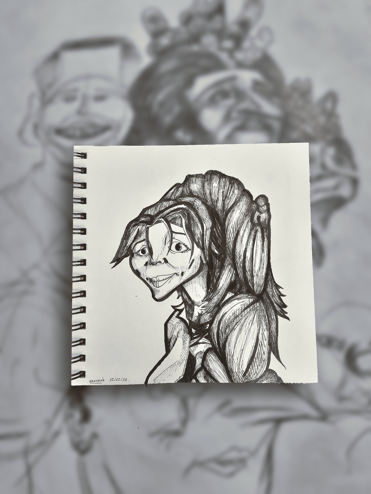
vitrine 04 / caricatures
Visages, grimaces & déformations.
Cette vitrine rassemble les caricatures Carickat : visages observés, traits exagérés, expressions poussées, portraits déformés et recherches autour de l’identité visuelle.
Ici, le visage devient terrain de jeu : une bouche trop présente, un regard étrange, une attitude, une tension ou un détail qui prend toute la place.
note de visage
La ressemblance n’est que le point de départ.
Une caricature ne cherche pas seulement à copier. Elle cherche l’énergie d’un visage : ce qui dépasse, ce qui accroche, ce qui rend une personne immédiatement reconnaissable.
esprit de la vitrine
Déformer sans perdre l’âme.
Le travail de caricature repose sur l’observation, l’exagération et la justesse expressive. Le dessin peut être drôle, étrange, brutal, élégant ou absurde, mais il doit toujours garder une présence.
- Caricatures personnalisées
- Portraits expressifs
- Déformations faciales
- Études de grimaces et attitudes
- Visages célèbres ou anonymes
- Commandes sur photo possibles
galerie / visages
Exemples de caricatures.
Cette galerie servira à montrer différents types de visages, de déformations et d’expressions. Les images seront remplacées progressivement par les caricatures finales et les meilleures pièces du carnet.
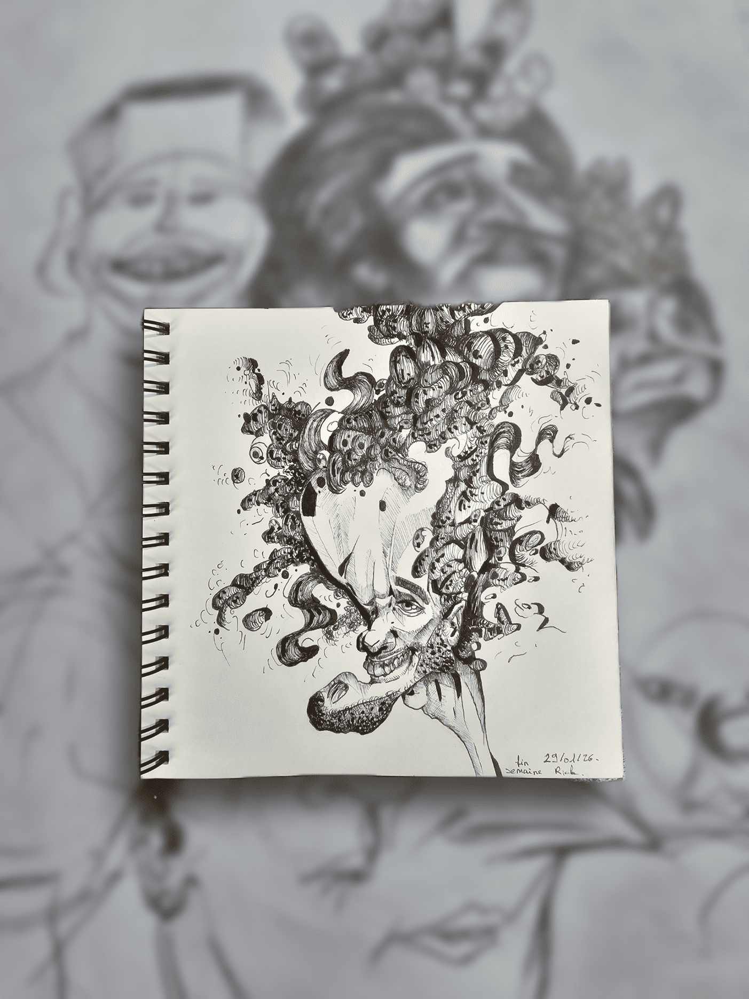
Visage 02
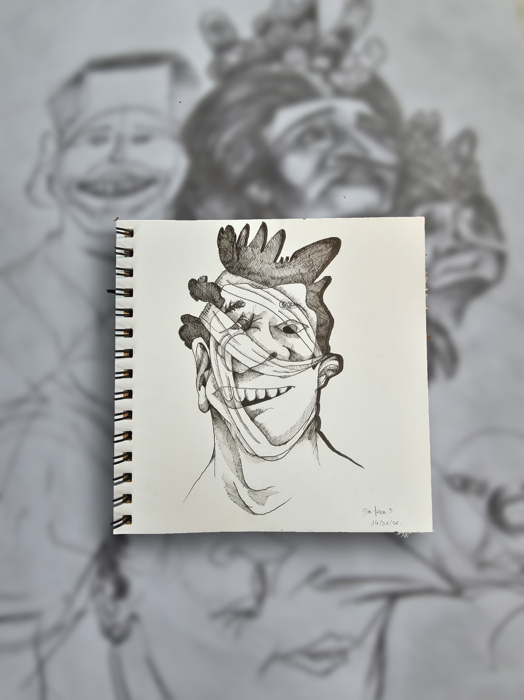
Visage 03
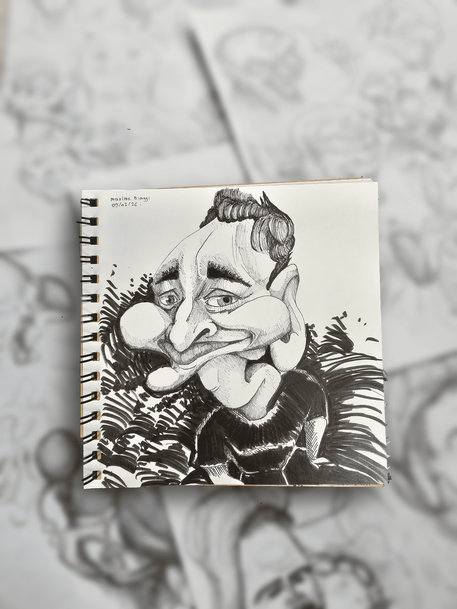
Visage 04
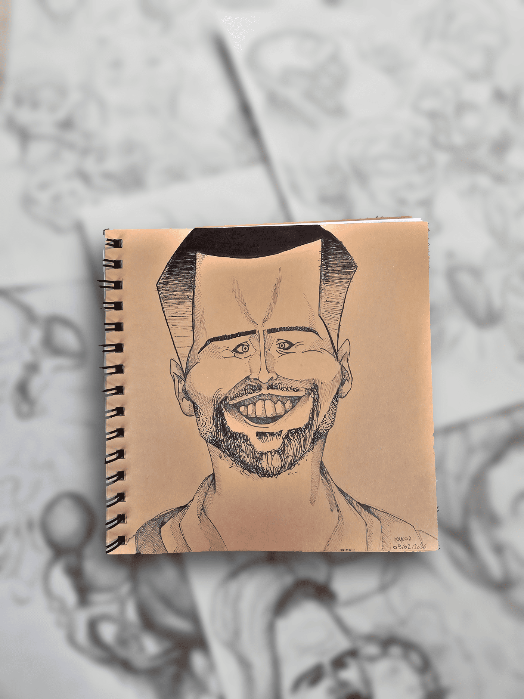
Visage 05
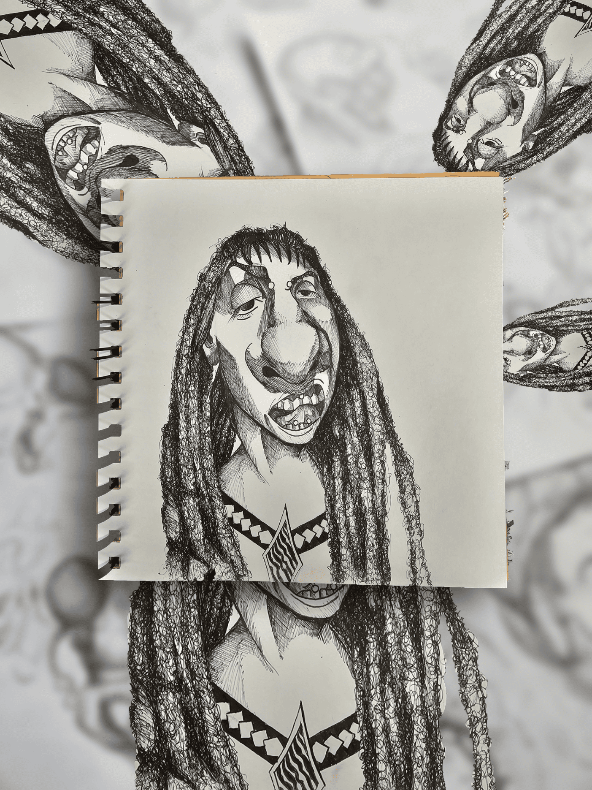
Visage 06
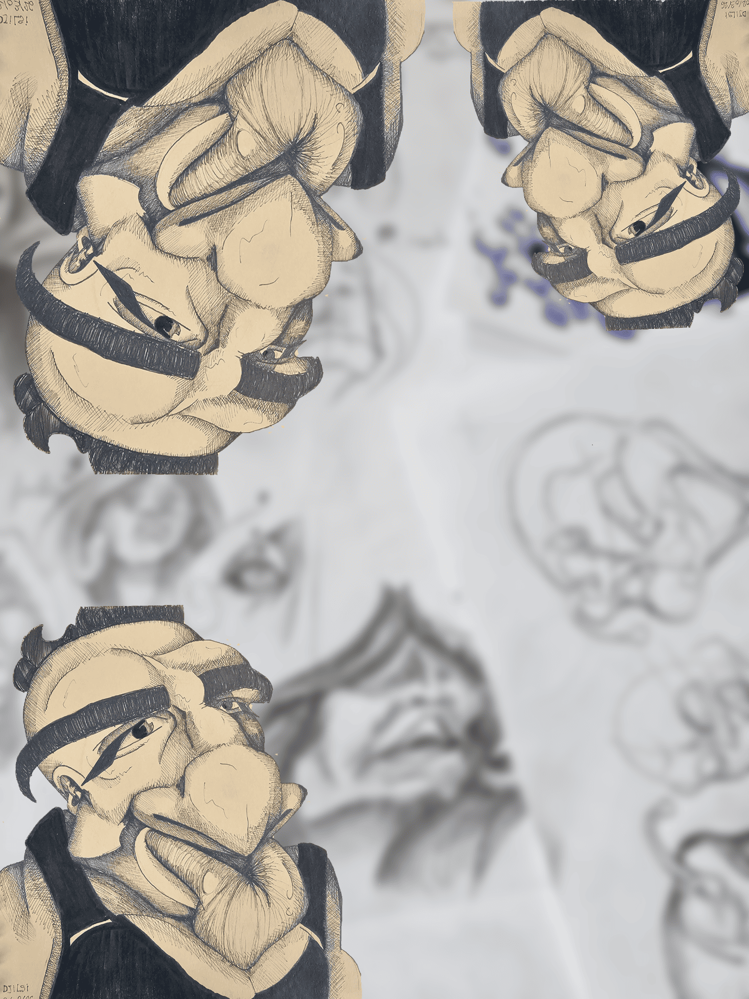
Visage 07
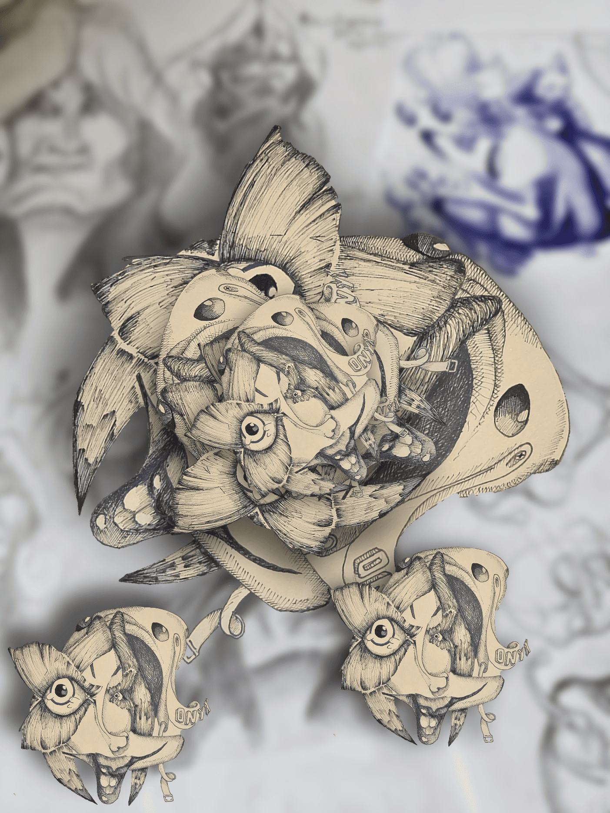
Visage 08
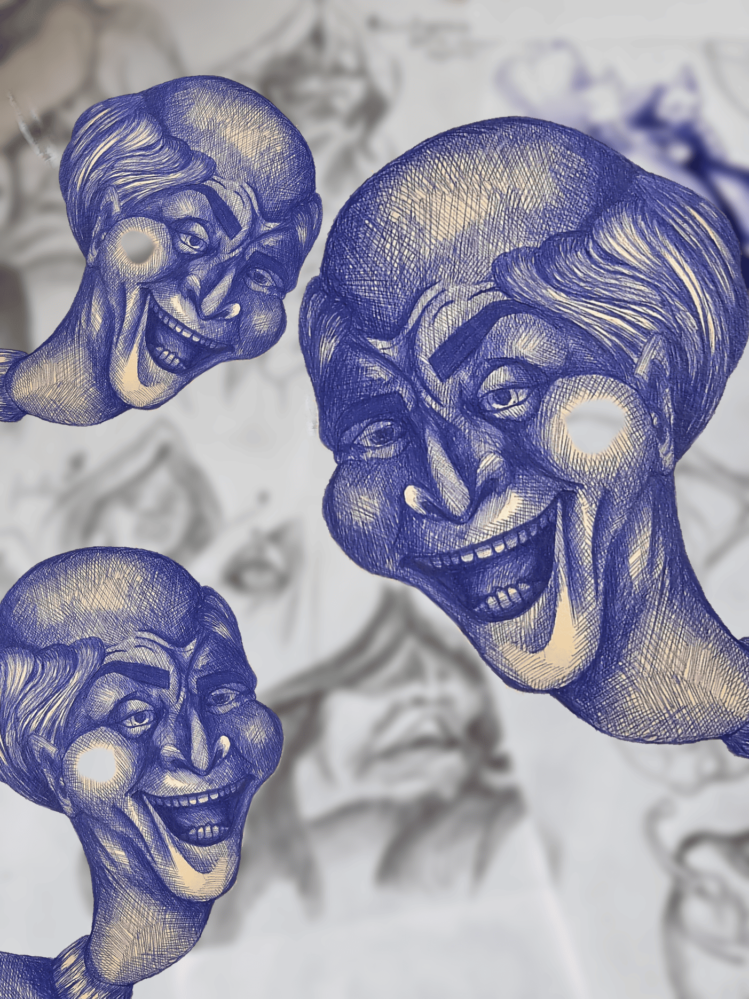
Visage 09
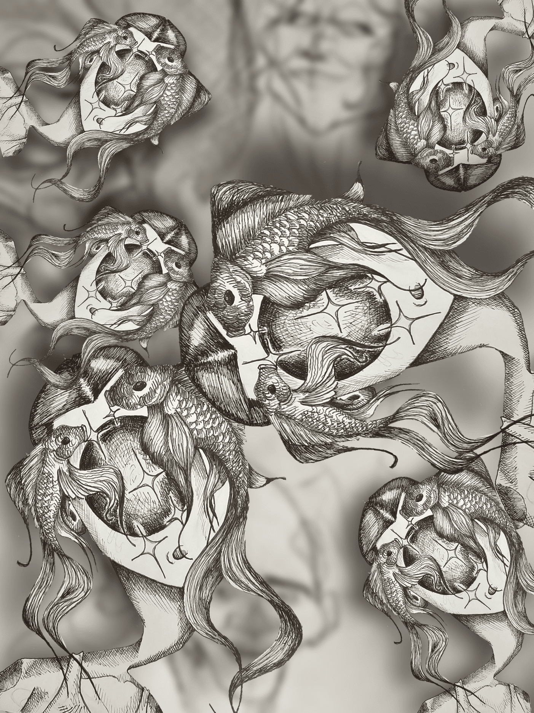
Visage 10
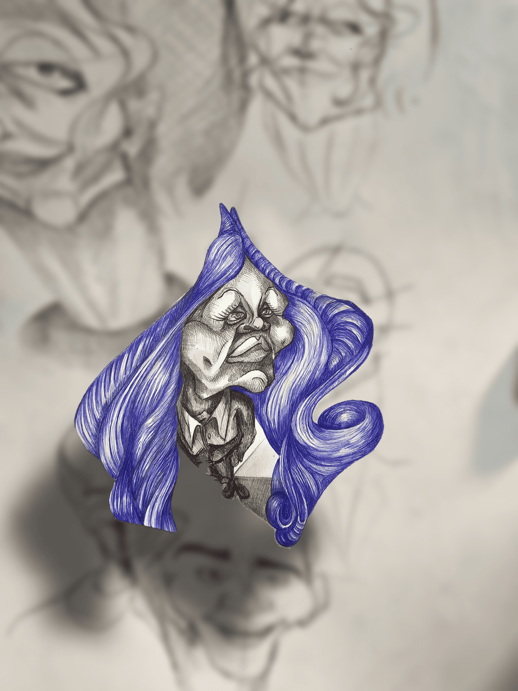
Visage 11
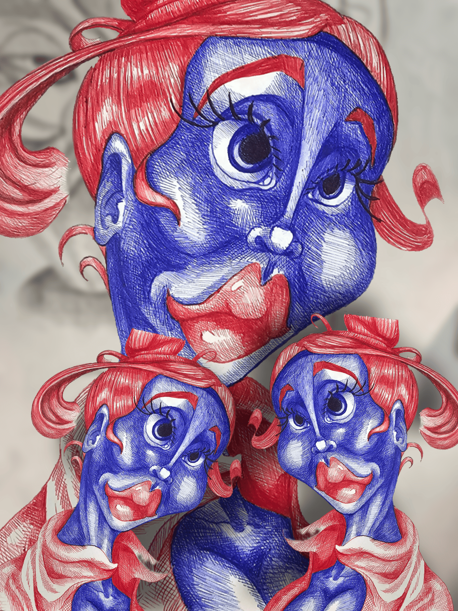
Visage 12
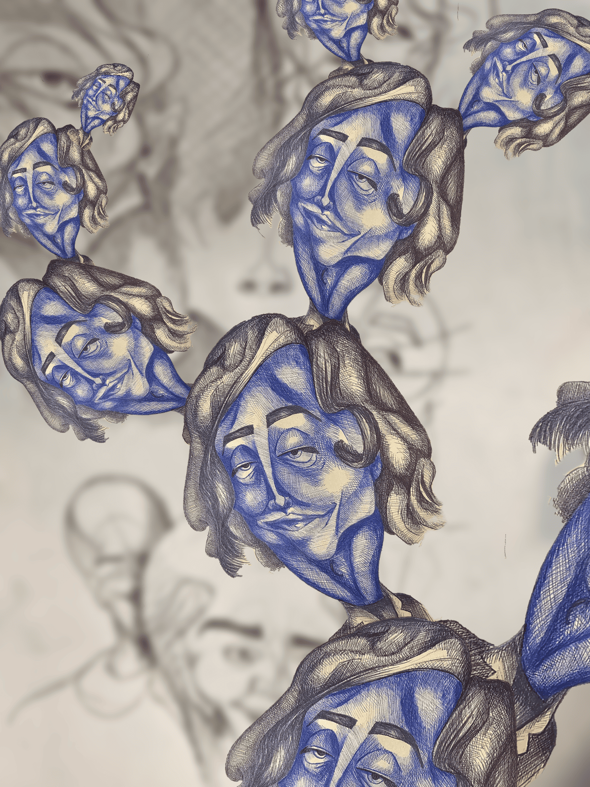
Visage 13
offres à venir
Ce qui pourra être proposé.
commande
Caricature personnalisée
Création d’une caricature à partir d’une photo, d’une personne, d’une expression ou d’une idée.
déjà possible
Faire une demande
prints
Prints de caricatures
Futures reproductions de certaines caricatures sélectionnées, en formats limités ou séries spéciales.
à venir
Être prévenu
original
Originaux caricature
Certaines caricatures pourront devenir des pièces originales disponibles à la vente.
en préparation
Retour boutique